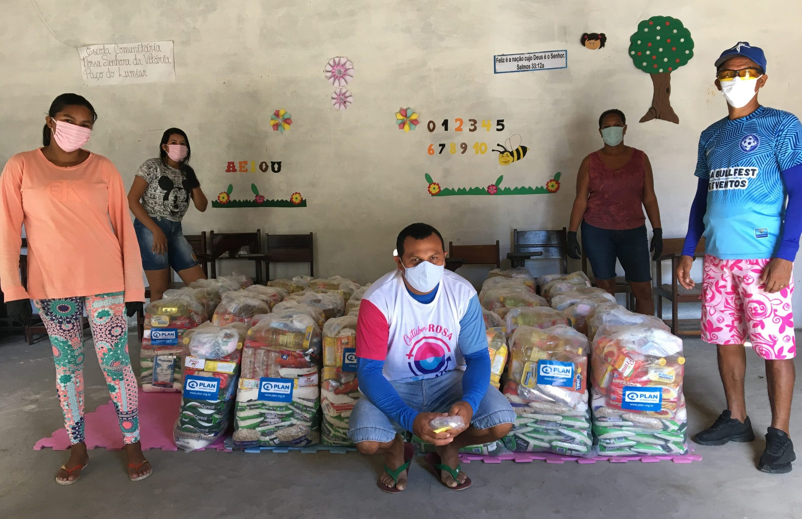
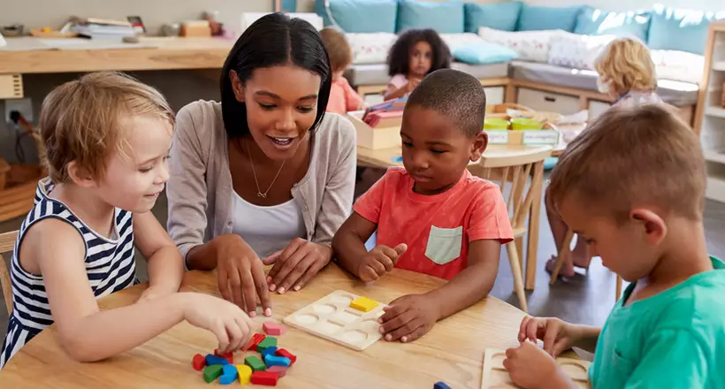
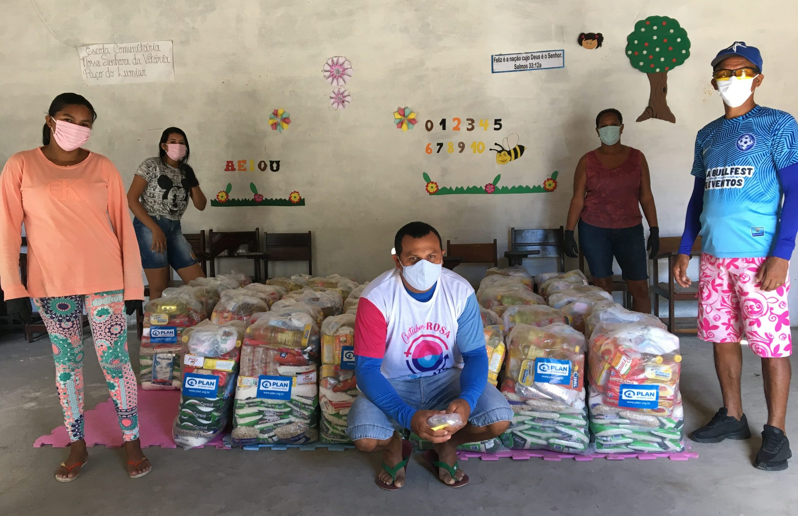
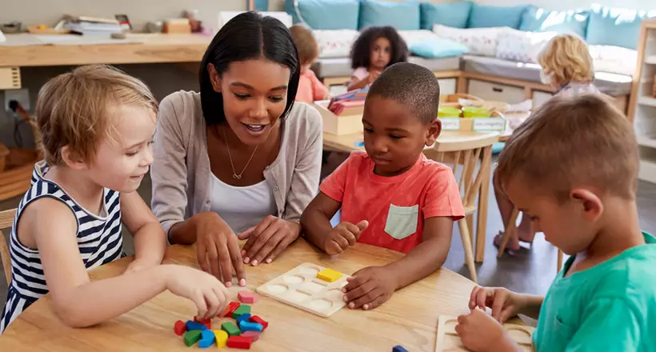

Projeto Educação
Oficinas e reforço escolar para crianças.
Conheça nossos projetos, participe como voluntário e ajude com doações.
Oficinas e reforço escolar para crianças.
Atendimento básico e campanhas de prevenção.
Distribuição de cestas básicas semanalmente.
 



Este vídeo possui legendas disponíveis. Clique no botão CC no player para ativá-las.
Transcrição do áudio: Depoimento de um beneficiário compartilhando como os projetos da ONG transformaram sua vida e comunidade.